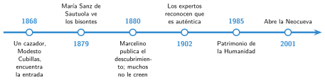
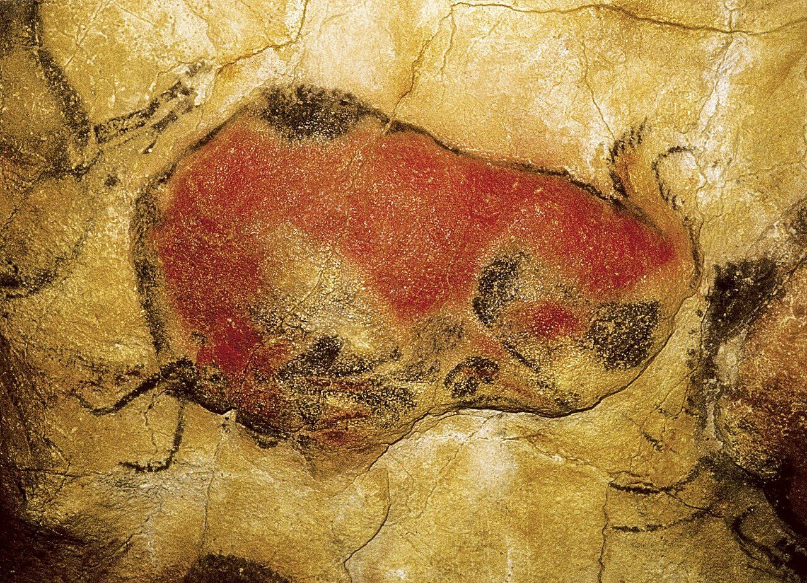
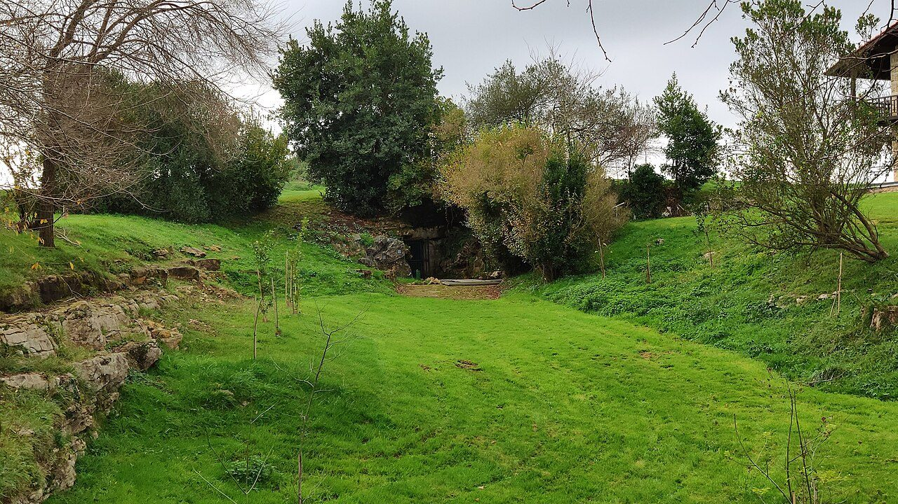
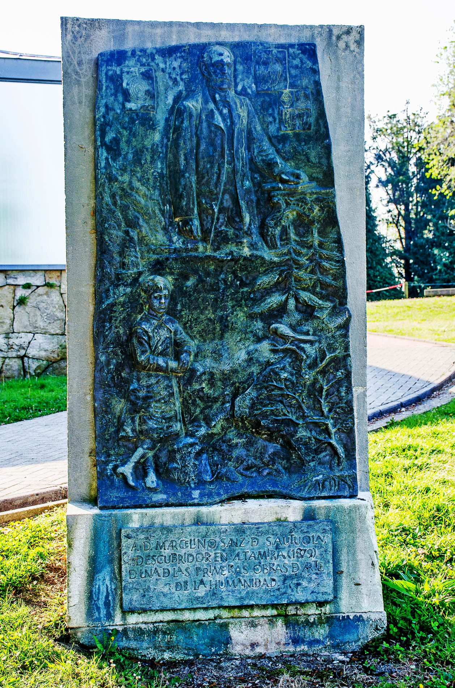

Altamira
Criterios: PC 5.1, PC 3.3, PC 8.2
🤔 Pienso5 min
Qué hago aquí: Piensa un momento y contesta con lo que ya sabes. No pasa nada si no lo sabes: es para empezar.
A Altamira se la llama «la Capilla Sixtina del arte paleolítico». ¿Qué crees que quiere decir esa comparación?
📖 Leo y aprendo15 min
Qué hago aquí: Lee despacio, mira los dibujos y los ejemplos, y quédate con la idea clave del final.


Foto: JnCrlsMG · CC BY-SA 4.0 · Cueva de Altamira (Santillana del Mar-Cantabria) - Bisonte.jpg

Foto: Alonso de Mendoza · CC BY-SA 4.0 · Entrada a la cueva de Altamira, Santillana del Mar.jpg

Foto: MottaW · CC0 · M-cueva-altamiran-monumento-marcelino-sanz-abril-2021.jpg
✏️ Hago25 min
Qué hago aquí: Haz las actividades en orden. Empieza siempre por las básicas.
Explica la comparación de Altamira con la Capilla Sixtina: ¿qué tienen en común las dos obras?
Ordena los hechos de la historia de Altamira. Después explica cuál fue, para ti, el momento clave y por qué.
Pon el número de orden a cada uno (1 es el primero).
Explica por qué muchos científicos de 1880 creyeron que las pinturas eran falsas. ¿Qué prejuicio tenían? ¿Qué pruebas les hicieron cambiar de opinión?
Explica por qué la visita de personas daña las pinturas: relaciona calor, humedad, aire respirado y microorganismos.
Los bisontes polícromos tienen unos 15 000 años. Si cada generación dura unos 25 años, ¿cuántas generaciones nos separan de quienes los pintaron? Compáralo con las que nos separan de la Edad Media (unos 1000 años).
Debate: ¿debería abrirse Altamira al público? Escribe dos argumentos a favor y dos en contra, y tu conclusión. ¿Es la Neocueva una buena solución?
Marcelino Sanz de Sautuola murió sin ver reconocido su descubrimiento. Escribe la carta que le habría escrito Cartailhac en 1902 (unas ocho líneas).
🚀 Amplío (si quieres saber más)
Qué hago aquí: ¿Has terminado? Lee la curiosidad o elige el reto. Es voluntario.
Explica por qué el derrumbe de la entrada hace unos 13 000 años conservó las pinturas. Relaciónalo con lo que pasó cuando se abrió la cueva al turismo en el siglo xx y escribe una norma general para conservar cuevas con arte.
✅ Compruebo5 min
Qué hago aquí: Contesta sin mirar la ficha y marca cómo lo llevas.